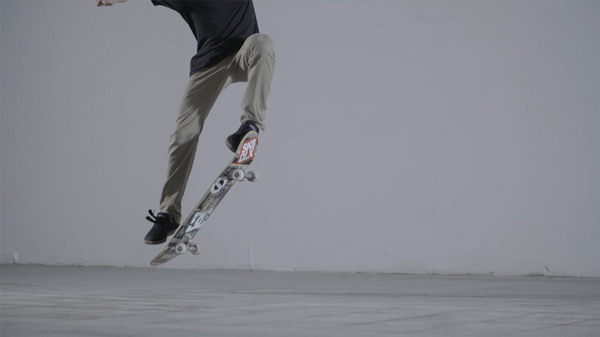
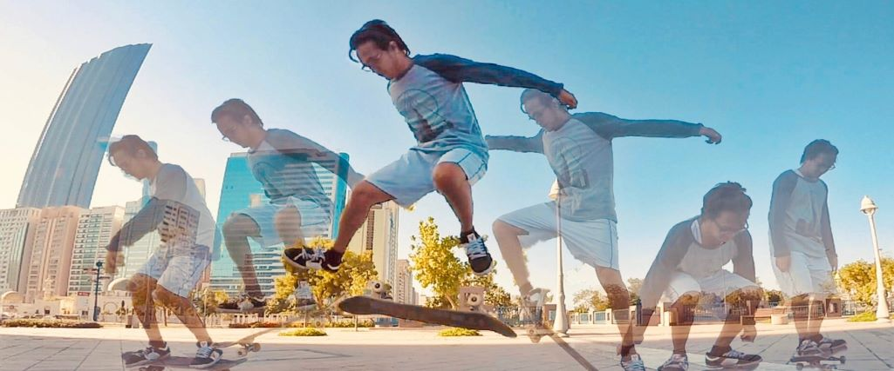
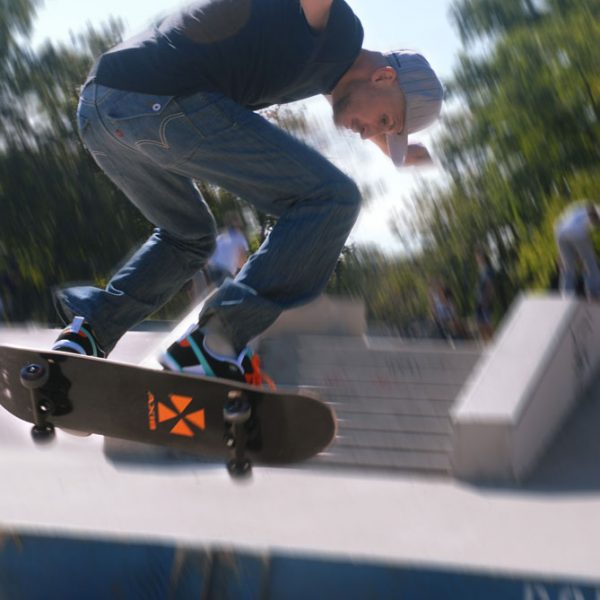
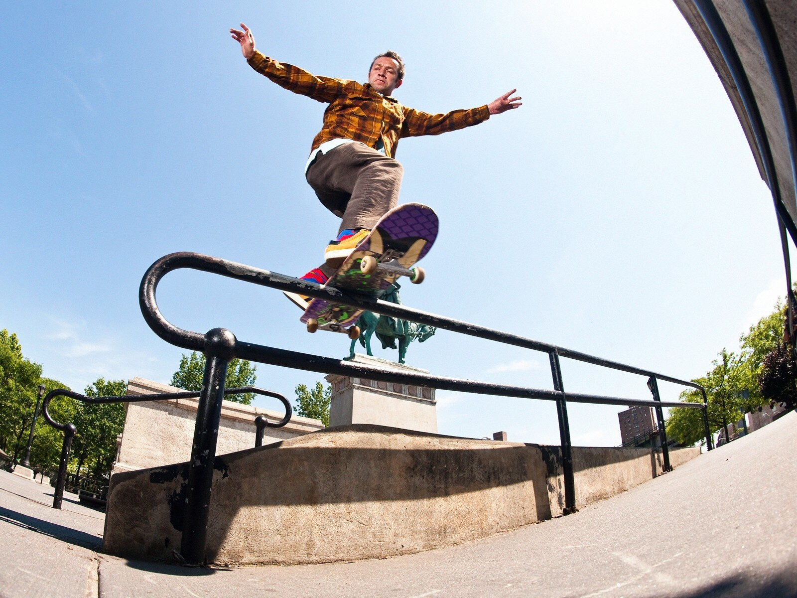

Trucos esenciales 
Ollie
La base de casi todos los trucos. Eleva la tabla apoyando la cola y desliza el pie delantero hacia arriba.
Kickflip
Gira la tabla hacia afuera con un flick del pie delantero, después cae sobre los tornillos.

Heelflip
Similar al kickflip pero se hace flick con el talón para girar la tabla hacia adentro.
🛹 Trucos Intermedios

Varial Kickflip
Combina un shove-it de 180° con un kickflip. El skate gira en dos ejes a la vez.
Crooked Grind
El eje delantero se engancha en el borde mientras el skate queda ligeramente cruzado.
Nose Manual
Manual apoyando solo la llanta delantera mientras mantienes equilibrio y control.
Shove-it 360
El skate gira completamente 360° horizontalmente sin rotar tu cuerpo.
Nollie Flip / Nollie Heelflip
Un flip hecho desde la nariz del skate, exige buena coordinación de pies.
🛹 Trucos Avanzados
360 Flip (Tre Flip)
Mezcla un shove-it 360° con un kickflip. Es uno de los trucos más icónicos del street.

Hardflip
El skate hace un frontside shove-it con un flip vertical muy cerrado.
Inward Heelflip
Combinación de heelflip con un backside shove-it, difícil por su rotación invertida.
Bigspin
Tu cuerpo gira 180° mientras el skate hace un 360° shove-it. Muy vistoso.
Feeble Grind
Tu eje trasero va sobre la baranda mientras el skate cuelga ligeramente hacia adentro.
Smith Grind
El eje trasero se apoya pero el delantero queda fuera del borde, manteniendo el skate “inclinado”.
Tailslide
Deslizas la parte trasera del skate sobre un borde o baranda manteniendo equilibrio.
Nollie Manual
Wheelie desde la nariz, requiere muchísima precisión y balance.
🛹 Trucos Pro / Elite
Laser Flip
Combina un heelflip con un frontside 360 shove-it. Un truco técnico y visualmente impresionante.

Impossible
La tabla gira envuelta alrededor del pie trasero, como un “loop vertical completo”.
Bigspin Flip
Un bigspin con un kickflip añadido, ideal para líneas técnicas.
Kickflip Back Smith
Un kickflip que aterriza directamente en un smith grind. Nivel profesional.
Noseblunt Slide
Empujas la nariz sobre la baranda en posición extrema mientras deslizas.
Switch Tre Flip
Haces un tre flip completo con la postura “switch”, uno de los trucos más difíciles del skate moderno.
360 Hardflip
Versión girada del hardflip que combina rotaciones extra en aire. Muy avanzado.